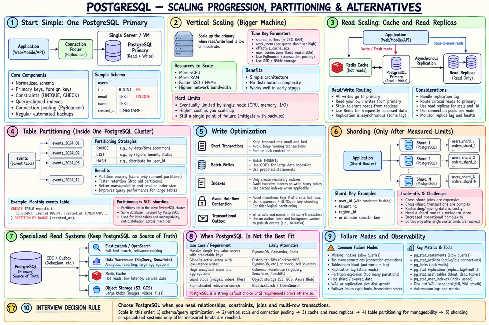

Topic · PostgreSQL
Scaling PostgreSQL: Partitioning and Sharding
Scale one step at a time. Partitioning keeps one cluster manageable; sharding splits ownership across clusters and should come last.


Quick Revision
- Schema → queries → indexes → tuning → pooling → scale up → cache → replicas → partition → offload → shard.
- Partitioning = child tables in one cluster; it's not sharding.
- Shard only when one primary's measured storage or write limit remains.
- Writes scale via short transactions, batching/COPY, fewer indexes, less hot-row contention.
- Migrations: expand → backfill in batches → switch → contract.
Scaling progression
- Correct normalized schema and constraints.
- Measure slow queries and app bottlenecks.
- Fix query shapes; add selective indexes.
- Keep statistics fresh; tune memory/storage conservatively.
- Bounded connection pool.
- Scale the primary up while economical.
- Cache repeated hot reads.
- Read replicas with freshness-aware routing.
- Partition large tables.
- Move specialized reads to search, analytics, cache, object storage.
- Shard only at a measured single-primary limit.
Partitioning vs sharding
CREATE TABLE events (
id BIGINT NOT NULL, user_id BIGINT NOT NULL,
created_at TIMESTAMPTZ NOT NULL, payload JSONB NOT NULL
) PARTITION BY RANGE (created_at);
CREATE TABLE events_2026_10 PARTITION OF events
FOR VALUES FROM ('2026-10-01') TO ('2026-11-01');
- Partitioning - time retention, partition pruning, smaller indexes, drop/detach old data fast, manageable big tables. Still one cluster.
- Sharding - ownership across clusters with routing. Costs: cross-shard joins/transactions, global uniqueness, resharding, multi-shard migrations, hot shards/tenants, harder backup/failover/ops.
Migrations and integrations
- Schema migrations - additive first, batched backfills, readers that handle both shapes, low-impact constraint validation, switch writes, drop old columns later. Never one giant transaction.
- Search - PG full-text for modest needs; CDC/outbox to Elasticsearch/OpenSearch for relevance, analyzers, facets.
- Analytics - no unbounded scans on the OLTP primary; stream to a warehouse/read model or use an isolated replica.
- Media - bytes in object storage, metadata in PG.
Trade-offs
| Choice | Benefit | Cost |
|---|---|---|
| PostgreSQL as core DB | Relational model, SQL, constraints, transactions | Not ideal for every KV/search/analytics/blob load |
| Cache | Lowest latency, offload | Invalidation, staleness, stampedes |
| Table partitioning | Pruning, retention, smaller indexes | Planning/ops overhead; one cluster |
| Application sharding | Scales storage and writes | Cross-shard ops, complexity |
Failure modes
- Partition explosion - planning/memory overhead → coarser partitions, ensure pruning.
- Wrong partition key - queries scan many partitions → align with retention and dominant filters.
- Premature sharding - prove a primary limit first.
- Hot shard - better key, isolate big tenant, split hot key, cache, rate limit.
- Migration locks hot table - expand/contract, bounded backfill, lock timeouts.
- Search overloads OLTP - external search via CDC/outbox.
- Analytics overloads primary - warehouse or isolated replica.
- Media in database - backups and I/O balloon → object storage.
Interview practice
Answer aloud, then reveal.
Partition or shard?
Partition when one cluster can own the data but a big table needs pruning/retention. Shard when one primary's measured storage or write capacity isn't enough.
How do you scale PostgreSQL reads?
Queries + indexes first, cache hot reads, then replicas with freshness-aware routing. Writes and fresh reads stay on primary.
How do you scale PostgreSQL writes?
Short transactions, batch/COPY, drop needless indexes, reduce hot rows, partition for ops, then shard by a query-local key.
Run a schema migration on a hot table?
Expand-contract: additive change, batched backfill, dual-shape readers, low-impact validation, switch, remove later.